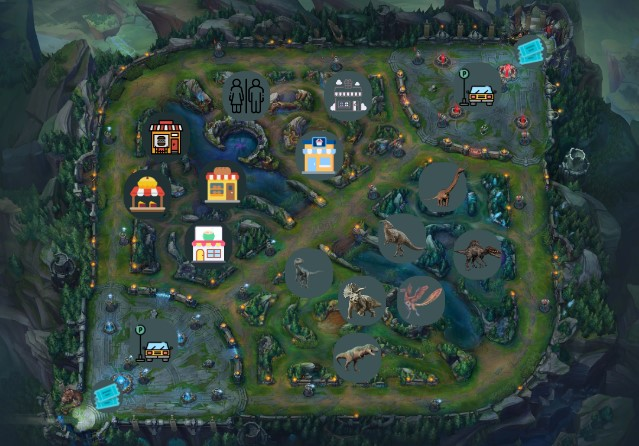

Durante la creación del proyecto utilizamos la metodología UML o como sus siglas en ingles indican Unified Modeling Language. El parque está diseñado para la preservación de distintas especies y el entretenimiento para recaudar fondos con el mismo propósito principal.
La misión de la empresa consiste en elevar los niveles de experiencia y entretenimiento del cliente todo con el fin de mejorar los niveles de dopamina de la sociedad actual de un modo más natural, dando momento de felicidad con la familia y el riesgo.
La misión de la empresa no es más que ambición, desde luego el mayor objetivo es y será ser los mejores.
Lo principal del parque desde luego son los dinosaurios y el entretenimiento alrededor de ellos, el parque cuenta con una capacidad máxima de 3000 personas, aproximadamente 100 dinosaurios de todo tipo y con 20 tipos de tiendas en sus instalaciones.